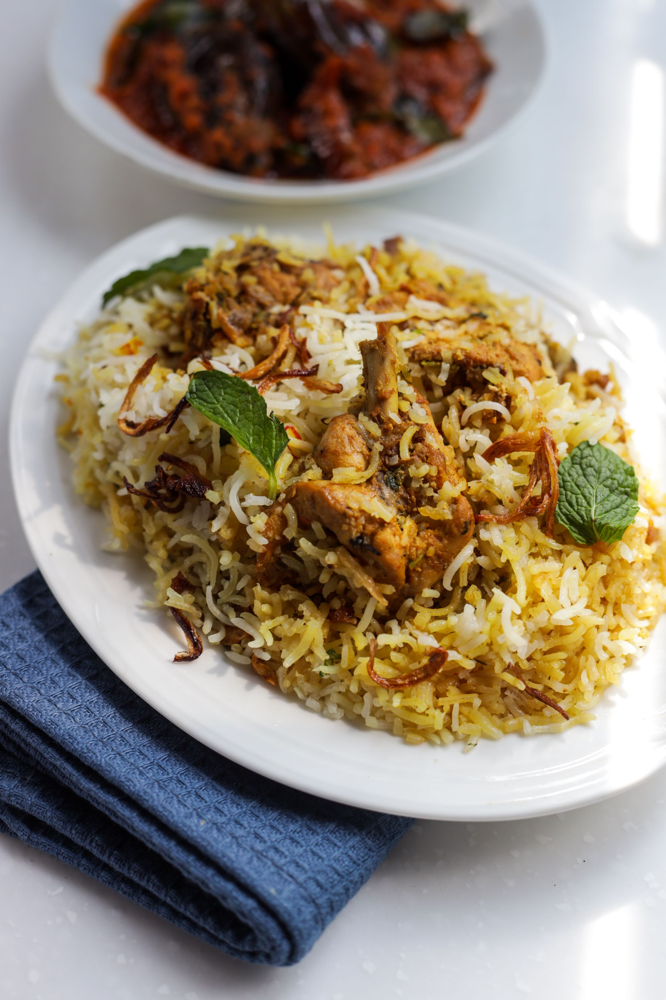

Chicken Biryani

Description
Chicken Biryani is a flavorful rice dish made with aromatic spices, tender
chicken, and fragrant basmati rice. It is one of the most popular dishes
in South Asia. This recipe combines rich spices with perfectly cooked rice
to create a comforting meal suitable for family dinners or special
occasions.
Ingredients
- Chicken pieces
- Basmati rice
- Onion
- Tomatoes
- Garlic
- Ginger
- Plain yogurt
- Biryani masala
- Turmeric
- Red chili powder
- Fresh coriander
- Fresh mint
- Cooking oil
- Salt
Steps
- Wash and soak the basmati rice.
- Cook the onions until golden brown.
- Add ginger, garlic, tomatoes, and spices.
- Stir in the chicken and cook until tender.
- Add yogurt and cook for several minutes.
- Partially cook the rice separately.
- Layer the rice over the chicken mixture.
- Cover and cook on low heat until fully done.
- Garnish with coriander and mint before serving.
Home